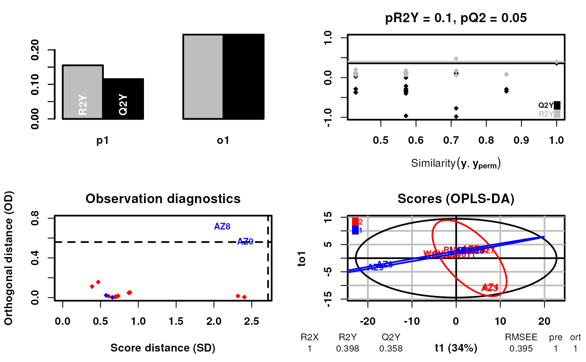

Function to perform supervised conformational signature analysis. In this case the construction of the signatures using labels as part of the dimensionality reduction which are defined in labels. The type of the labels can be catagorical or continuous. The function returns the OPLS-DA object. The labels are allowed to contain "Unknown" values which are ignored in the analysis if the type is catagorical. If the type is continuous, the "Unknown" values should be recorded as NAs.
supervisedCSA.RdFunction to perform supervised conformational signature analysis. In this case the construction of the signatures using labels as part of the dimensionality reduction which are defined in labels. The type of the labels can be catagorical or continuous. The function returns the OPLS-DA object. The labels are allowed to contain "Unknown" values which are ignored in the analysis if the type is catagorical. If the type is continuous, the "Unknown" values should be recorded as NAs.
supervisedCSA(
RexDifferentialList,
quantity = "TRE",
states,
labels,
whichlabel = 1,
whichTimepoint = 600,
type = "catagorical",
orthoI = 1
)Arguments
- RexDifferentialList
A list of RexDifferential objects
- quantity
The quantity to use for the analysis. Default is "TRE"
- states
The state name to use for the analysis. e.g. ligand used in differential analysis
- labels
The labels to use for the analysis. Construct labels carefully using example below. The labels should be a data frame with the rownames as the states and the columns as the labels to use for the analysis.
- whichlabel
The column in the labels to use for the analysis. Default is 1
- whichTimepoint
The timepoint to use for the analysis. Default is 600
- type
The type of the labels. Default is "catagorical" but could be "continuous". If "continuous" the "Unknown" values should be recorded as NAs.
- orthoI
The number of orthogonal components to use in the OPLS-DA analysis. Default is 1
Value
An OPLS-DA object
Examples
# Construct labels carefully using known properties of the states (Ligands)
# first a catagorical example
library("RexMS")
data("out_lxr_compound_proccessed")
data("LXRalpha_compounds")
states <- names(LXRalpha_compounds)
labels <- data.frame(ABCA1 = rep("Unknown", length(states)),
lipogenic = rep("Unknown", length(states)))
rownames(labels) <- states
labels$ABCA1[rownames(labels) %in% c("LXR.623", "AZ9", "AZ8", "AZ5")] <- "low"
labels$ABCA1[rownames(labels) %in% c("Az1", "AZ2", "AZ3", "AZ4", "AZ6",
"AZ7", "AZ876", "T0.901317", "WAY.254011",
"F1", "GW3965", "BMS.852927")] <- "high"
labels$lipogenic[rownames(labels) %in% c("AZ6", "AZ7", "AZ9",
"AZ8", "GW3965", "BMS.852927",
"LXR.623")] <- "Non-Lipogenic"
labels$lipogenic[rownames(labels) %in% c("AZ876", "AZ1",
"T0.901317", "F1", "WAY.254011")] <- "Lipogenic"
labels$ABCA1 <- factor(labels$ABCA1,
levels = c("low", "high", "Unknown"))
labels$lipogenic <- factor(labels$lipogenic,
levels = c("Non-Lipogenic", "Lipogenic", "Unknown"))
# First using ABCA1 as an example
scsa <- supervisedCSA(RexDifferentialList = out_lxr_compound_proccessed,
quantity = "TRE",
states = states,
labels = labels,
whichlabel = "ABCA1",
whichTimepoint = 600,
orthoI = 1)
#> Warning: OPLS: number of predictive components ('predI' argument) set to 1
#> Warning: The variance of the 263 following variables is less than 2.2e-16 in the full or partial (cross-validation) dataset: these variables will be removed:
#> 1, 2, 3, 4, 5, 6, 7, 8, 9, 10, 11, 12, 13, 14, 15, 16, 17, 18, 19, 20, 21, 22, 23, 24, 25, 26, 27, 28, 29, 30, 31, 32, 33, 34, 35, 36, 37, 38, 39, 40, 41, 42, 43, 44, 45, 46, 47, 48, 49, 50, 51, 52, 53, 54, 55, 56, 57, 58, 59, 60, 61, 62, 63, 64, 65, 66, 67, 68, 69, 70, 71, 72, 73, 74, 75, 76, 77, 78, 79, 80, 81, 82, 83, 84, 85, 86, 87, 88, 89, 90, 91, 92, 93, 94, 95, 96, 97, 98, 99, 100, 101, 102, 103, 104, 105, 106, 107, 108, 109, 110, 111, 112, 113, 114, 115, 116, 117, 118, 119, 120, 121, 122, 123, 124, 125, 126, 127, 128, 129, 130, 131, 132, 133, 134, 135, 136, 137, 138, 139, 140, 141, 142, 143, 144, 145, 146, 147, 148, 149, 150, 151, 152, 153, 154, 155, 156, 157, 158, 159, 160, 161, 162, 163, 164, 165, 166, 167, 168, 169, 170, 171, 172, 173, 174, 175, 176, 177, 178, 179, 180, 181, 182, 183, 184, 185, 186, 187, 188, 189, 190, 191, 192, 193, 194, 195, 196, 197, 198, 199, 200, 201, 204, 208, 214, 215, 234, 235, 237, 239, 242, 244, 258, 259, 260, 261, 262, 268, 272, 276, 279, 280, 291, 300, 308, 317, 318, 319, 320, 332, 333, 334, 335, 336, 338, 342, 350, 357, 358, 359, 360, 361, 366, 370, 390, 391, 392, 393, 394, 395, 396, 397, 398, 399, 400, 401, 402, 403, 404, 405, 406, 428, 436, 437
#> OPLS-DA
#> 14 samples x 184 variables and 1 response
#> standard scaling of predictors and response(s)
#> 263 excluded variables (near zero variance)
#> R2X(cum) R2Y(cum) Q2(cum) RMSEE pre ort pR2Y pQ2
#> Total 1 0.398 0.358 0.395 1 1 0.1 0.05

# Now using lipogenic as an example
scsa2 <- supervisedCSA(RexDifferentialList = out_lxr_compound_proccessed,
quantity = "TRE",
states = states,
labels = labels,
whichlabel = "lipogenic",
whichTimepoint = 600,
orthoI = 1)
#> Warning: OPLS: number of predictive components ('predI' argument) set to 1
#> Warning: The variance of the 263 following variables is less than 2.2e-16 in the full or partial (cross-validation) dataset: these variables will be removed:
#> 1, 2, 3, 4, 5, 6, 7, 8, 9, 10, 11, 12, 13, 14, 15, 16, 17, 18, 19, 20, 21, 22, 23, 24, 25, 26, 27, 28, 29, 30, 31, 32, 33, 34, 35, 36, 37, 38, 39, 40, 41, 42, 43, 44, 45, 46, 47, 48, 49, 50, 51, 52, 53, 54, 55, 56, 57, 58, 59, 60, 61, 62, 63, 64, 65, 66, 67, 68, 69, 70, 71, 72, 73, 74, 75, 76, 77, 78, 79, 80, 81, 82, 83, 84, 85, 86, 87, 88, 89, 90, 91, 92, 93, 94, 95, 96, 97, 98, 99, 100, 101, 102, 103, 104, 105, 106, 107, 108, 109, 110, 111, 112, 113, 114, 115, 116, 117, 118, 119, 120, 121, 122, 123, 124, 125, 126, 127, 128, 129, 130, 131, 132, 133, 134, 135, 136, 137, 138, 139, 140, 141, 142, 143, 144, 145, 146, 147, 148, 149, 150, 151, 152, 153, 154, 155, 156, 157, 158, 159, 160, 161, 162, 163, 164, 165, 166, 167, 168, 169, 170, 171, 172, 173, 174, 175, 176, 177, 178, 179, 180, 181, 182, 183, 184, 185, 186, 187, 188, 189, 190, 191, 192, 193, 194, 195, 196, 197, 198, 199, 200, 201, 204, 208, 214, 215, 234, 235, 237, 239, 242, 244, 258, 259, 260, 261, 262, 268, 272, 276, 279, 280, 291, 300, 308, 317, 318, 319, 320, 332, 333, 334, 335, 336, 338, 342, 350, 357, 358, 359, 360, 361, 366, 370, 390, 391, 392, 393, 394, 395, 396, 397, 398, 399, 400, 401, 402, 403, 404, 405, 406, 428, 436, 437
#> OPLS-DA
#> 11 samples x 184 variables and 1 response
#> standard scaling of predictors and response(s)
#> 263 excluded variables (near zero variance)
#> R2X(cum) R2Y(cum) Q2(cum) RMSEE pre ort pR2Y pQ2
#> Total 1 0.12 -0.0506 0.529 1 1 0.75 0.35
 # Now using a continuous example, add additional annotation to the labels
# Here we use the ED50 values of the ligands, using the log values to
# because of the large range
labels$ED50 <- NA
labels[, "ED50"] <- log(c(4.11, NA, NA, 0.956, NA, 9.64, 1.49,
5.65, 0.969, 2.10, 11.3, NA, 31.5, 341, 32.2, 17.2,
NA))
scsa3 <- supervisedCSA(RexDifferentialList = out_lxr_compound_proccessed,
quantity = "TRE",
states = states,
labels = labels,
whichlabel = "ED50",
whichTimepoint = 600,
type = "continuous",
orthoI = 1)
#> Warning: OPLS: number of predictive components ('predI' argument) set to 1
#> Warning: The variance of the 263 following variables is less than 2.2e-16 in the full or partial (cross-validation) dataset: these variables will be removed:
#> 1, 2, 3, 4, 5, 6, 7, 8, 9, 10, 11, 12, 13, 14, 15, 16, 17, 18, 19, 20, 21, 22, 23, 24, 25, 26, 27, 28, 29, 30, 31, 32, 33, 34, 35, 36, 37, 38, 39, 40, 41, 42, 43, 44, 45, 46, 47, 48, 49, 50, 51, 52, 53, 54, 55, 56, 57, 58, 59, 60, 61, 62, 63, 64, 65, 66, 67, 68, 69, 70, 71, 72, 73, 74, 75, 76, 77, 78, 79, 80, 81, 82, 83, 84, 85, 86, 87, 88, 89, 90, 91, 92, 93, 94, 95, 96, 97, 98, 99, 100, 101, 102, 103, 104, 105, 106, 107, 108, 109, 110, 111, 112, 113, 114, 115, 116, 117, 118, 119, 120, 121, 122, 123, 124, 125, 126, 127, 128, 129, 130, 131, 132, 133, 134, 135, 136, 137, 138, 139, 140, 141, 142, 143, 144, 145, 146, 147, 148, 149, 150, 151, 152, 153, 154, 155, 156, 157, 158, 159, 160, 161, 162, 163, 164, 165, 166, 167, 168, 169, 170, 171, 172, 173, 174, 175, 176, 177, 178, 179, 180, 181, 182, 183, 184, 185, 186, 187, 188, 189, 190, 191, 192, 193, 194, 195, 196, 197, 198, 199, 200, 201, 204, 208, 214, 215, 234, 235, 237, 239, 242, 244, 258, 259, 260, 261, 262, 268, 272, 276, 279, 280, 291, 300, 308, 317, 318, 319, 320, 332, 333, 334, 335, 336, 338, 342, 350, 357, 358, 359, 360, 361, 366, 370, 390, 391, 392, 393, 394, 395, 396, 397, 398, 399, 400, 401, 402, 403, 404, 405, 406, 428, 436, 437
#> OPLS
#> 12 samples x 184 variables and 1 response
#> standard scaling of predictors and response(s)
#> 263 excluded variables (near zero variance)
#> R2X(cum) R2Y(cum) Q2(cum) RMSEE pre ort pR2Y pQ2
#> Total 0.997 0.363 0.0176 1.52 1 1 0.35 0.35
# Now using a continuous example, add additional annotation to the labels
# Here we use the ED50 values of the ligands, using the log values to
# because of the large range
labels$ED50 <- NA
labels[, "ED50"] <- log(c(4.11, NA, NA, 0.956, NA, 9.64, 1.49,
5.65, 0.969, 2.10, 11.3, NA, 31.5, 341, 32.2, 17.2,
NA))
scsa3 <- supervisedCSA(RexDifferentialList = out_lxr_compound_proccessed,
quantity = "TRE",
states = states,
labels = labels,
whichlabel = "ED50",
whichTimepoint = 600,
type = "continuous",
orthoI = 1)
#> Warning: OPLS: number of predictive components ('predI' argument) set to 1
#> Warning: The variance of the 263 following variables is less than 2.2e-16 in the full or partial (cross-validation) dataset: these variables will be removed:
#> 1, 2, 3, 4, 5, 6, 7, 8, 9, 10, 11, 12, 13, 14, 15, 16, 17, 18, 19, 20, 21, 22, 23, 24, 25, 26, 27, 28, 29, 30, 31, 32, 33, 34, 35, 36, 37, 38, 39, 40, 41, 42, 43, 44, 45, 46, 47, 48, 49, 50, 51, 52, 53, 54, 55, 56, 57, 58, 59, 60, 61, 62, 63, 64, 65, 66, 67, 68, 69, 70, 71, 72, 73, 74, 75, 76, 77, 78, 79, 80, 81, 82, 83, 84, 85, 86, 87, 88, 89, 90, 91, 92, 93, 94, 95, 96, 97, 98, 99, 100, 101, 102, 103, 104, 105, 106, 107, 108, 109, 110, 111, 112, 113, 114, 115, 116, 117, 118, 119, 120, 121, 122, 123, 124, 125, 126, 127, 128, 129, 130, 131, 132, 133, 134, 135, 136, 137, 138, 139, 140, 141, 142, 143, 144, 145, 146, 147, 148, 149, 150, 151, 152, 153, 154, 155, 156, 157, 158, 159, 160, 161, 162, 163, 164, 165, 166, 167, 168, 169, 170, 171, 172, 173, 174, 175, 176, 177, 178, 179, 180, 181, 182, 183, 184, 185, 186, 187, 188, 189, 190, 191, 192, 193, 194, 195, 196, 197, 198, 199, 200, 201, 204, 208, 214, 215, 234, 235, 237, 239, 242, 244, 258, 259, 260, 261, 262, 268, 272, 276, 279, 280, 291, 300, 308, 317, 318, 319, 320, 332, 333, 334, 335, 336, 338, 342, 350, 357, 358, 359, 360, 361, 366, 370, 390, 391, 392, 393, 394, 395, 396, 397, 398, 399, 400, 401, 402, 403, 404, 405, 406, 428, 436, 437
#> OPLS
#> 12 samples x 184 variables and 1 response
#> standard scaling of predictors and response(s)
#> 263 excluded variables (near zero variance)
#> R2X(cum) R2Y(cum) Q2(cum) RMSEE pre ort pR2Y pQ2
#> Total 0.997 0.363 0.0176 1.52 1 1 0.35 0.35